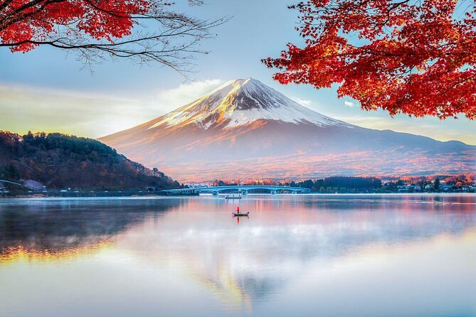
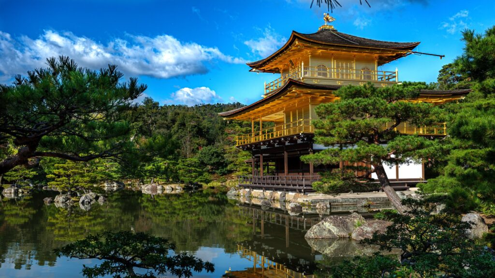
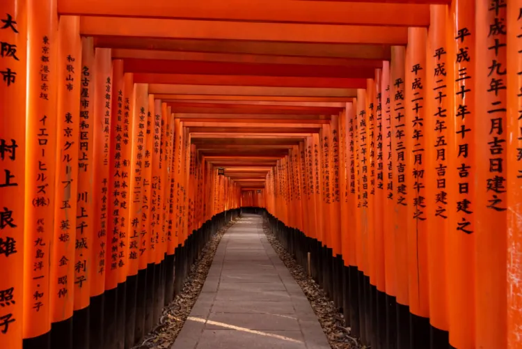
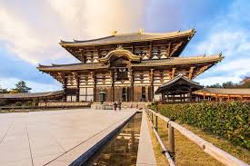
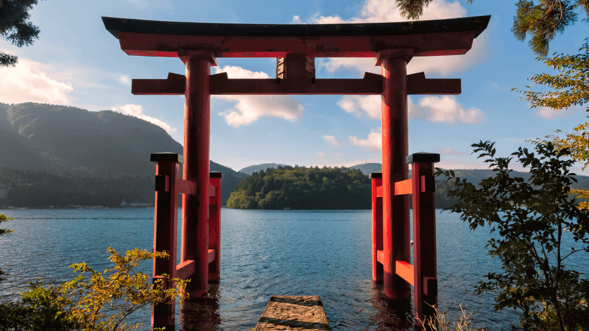

Experience the land of the rising sun where tradition meets modernity, and serene landscapes blend with bustling cityscapes.
Explore Japan's Attractions
Tokyo: Explore the vibrant metropolis of Tokyo, where ancient temples stand alongside modern skyscrapers.

Mount Fuji Behold the majestic beauty of Mount Fuji, Japan's iconic symbol and the highest peak in the country.

Kinkaku-ji Visit the stunning Golden Pavilion, a UNESCO World Heritage Site renowned for its exquisite architecture and tranquil surroundings.

Kyoto Immerse yourself in the cultural heart of Japan with a visit to Kyoto, home to countless temples, gardens, and traditional tea houses.

Todai-ji Marvel at the grandeur of Todai-ji, one of Japan's most historic temples and home to the Great Buddha, the world's largest bronze statue of Buddha.

Hakone Relax in the tranquil hot springs of Hakone, offering stunning views of Mount Fuji and pristine natural landscapes.
Plan Your Trip
Ready to embark on your journey to Japan? Explore our travel guide and start planning your unforgettable adventure today!